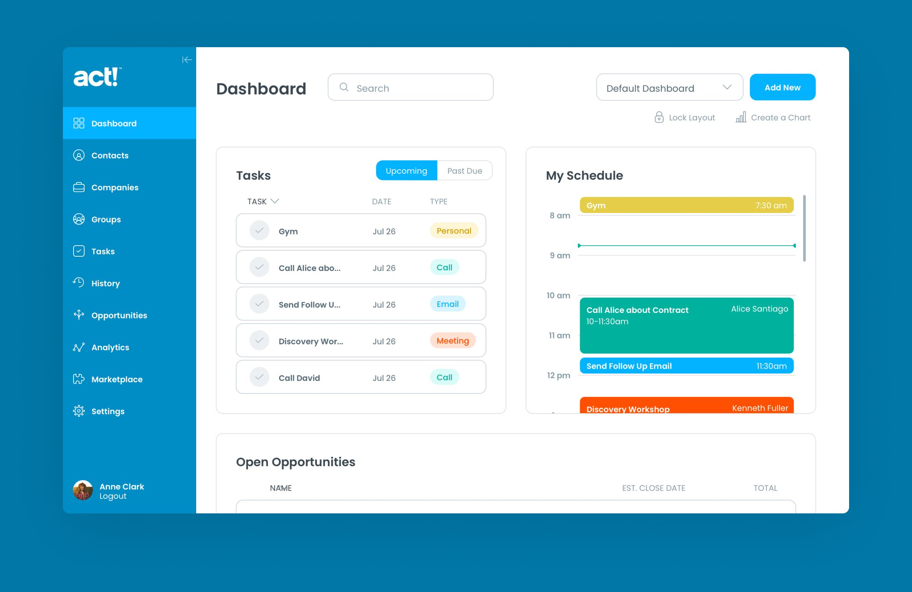
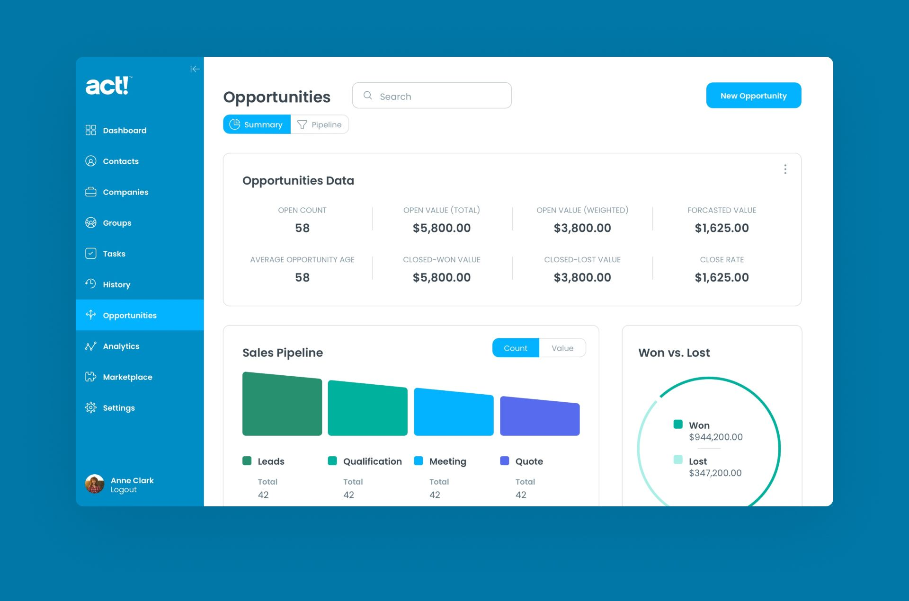

Named Activity Control Technology when first launched in the 1980s, and later named Automated Contact Tracking, Act! has been a beloved and trusted tool for a whole generation of small and midsize business owners.
It was the best-selling Windows contact management software in the 1990s and is still one of the most recognizable legacy brands in the Customer Relationship Management (CRM) space.
At its peak, Act! was a widely used CRM tool. But as cloud-based solutions emerged, it began to feel outdated.
In 2013, Swiftpage acquired Act! and began modernizing it into a cloud-based CRM. By 2020, the company rebranded itself as Act! to reflect its renewed focus.
Swiftpage was facing several core challenges when they enlisted the help of Drawbackwards.
— Skip the Design Process
Swiftpage set out to modernize Act! without losing legacy users, while also appealing to a new generation expecting cloud-based, subscription-driven tools. They brought us in to help bridge the gap and accelerate the transformation.
We started where we always do — with the user. In this case, there were two main sets of users. The existing users of the legacy product were in their 60s and resistant to change.
The new target users were in their 30s and looking for social media integration and marketing automation features.Swiftpage already had a general understanding of their target users and their needs. We worked with them to clarify specific user personas so we could focus on the features that would make the biggest difference.
We conducted a usability study with legacy Act! users to understand their daily workflows, key features used, and overall experience. Using our proprietary UX survey tool, we established a benchmark for future design improvements.
We tested prototypes for new Calendars and Tasks features to identify pain points and validate our initial solutions. Additionally, we explored any barriers to users adopting the next-generation version of the product.
The usability study provided a strong baseline for understanding a key user persona. We found they valued customization over ease of use but were open to future third-party integrations. They also disliked the old design and preferred the modern look of our prototype.
With the insights from our research, we were able to start iterating faster on our design ideas. We worked with the Swiftpage team to develop concepts for two separate products in tandem. This allowed for continuity of design styles and systems across the products.
The first product, called Nexus, was going to be the CRM platform of the future. Initially available for Mac and Windows, it would later move to a cloud-based SaaS product.
By setting the groundwork for Nexus we could ensure that the next iteration of the legacy product — Act! Growth Suite — could evolve and grow together into Nexus with complementary features and a consistent look and feel.

As users expect a seamless, personalized trial experience, we conducted research to help Swiftpage improve the free trial of their cloud-based SaaS product, modernizing it for today’s expectations.
Our research combined user interviews with recent Act! trial users, a heuristic analysis from our Drawbackwards designer, and a competitive review of free trial best practices in similar products.
The research revealed key flaws in the Act! Growth Suite free trial that hindered users' purchase intent. With limited time to evaluate, users need to quickly see if the product meets their needs to stay competitive.
Our heuristic analysis identified pain points shared by users and allowed us to suggest quick fixes. By improving the initial user experience, we helped Swiftpage create a consistent, intuitive interface that makes a strong first impression from day one.
The competitive analysis highlighted that even without in-person sales, users still expect a consultative experience. They want to feel heard, confident the product will meet their needs, and have access to support, as this reflects the company's long-term customer service quality.
A clear, easy, and intuitive Free Trial is the very first step to building long-term loyalty. With these research insights, we helped revamp the entire onboarding experience from welcome emails to the features offered in the Free Trial.
Swiftpage approached Drawbackwards at a crossroads—needing to modernize a successful legacy product while defining the identity of their next-gen offering. They needed a UX-focused design to guide their future and stay ahead of the competition.
Through user research, UX strategy, design thinking, and close collaboration with Swiftpage’s leadership and product teams, we crafted a clear, modern direction for their brand. Together, we created a game-changing product experience that would drive user loyalty and ensure long-term success. society.